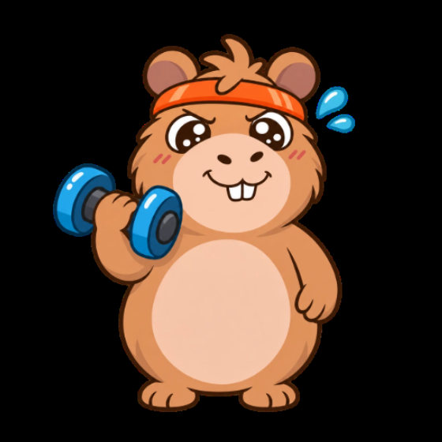

CapyShape
Uma capivara que entra em forma junto com você.
Anote comida, água e treinos em segundos. A capivara enche como um copo com as calorias do dia e muda de corpo conforme você treina.
Em teste fechado no Google Play

Como ajuda
Calorias sem complicação
Mais de 7.000 alimentos com nomes do dia a dia. Toque, escolha a porção e pronto.
Água em copos
Oito copos por dia. Toque para encher, toque de novo para desfazer.
Treinos que contam
Cronômetro, meta semanal e calorias gastas que somam à sua meta do dia.
Uma capivara que evolui
Cinco corpos, de fofinha a forte. Ela comemora cada conquista com você.
Perguntas frequentes
O CapyShape é grátis?
Sim, com anúncios. O Premium opcional tira os anúncios, sincroniza treinos do relógio e libera o histórico completo.
Meus dados vão para a internet?
Não. Comida, água e treinos ficam só no seu celular. Não existe conta nem servidor.
Substitui um nutricionista?
Não. As calorias são estimativas para ajudar no dia a dia.
Contato: osamdemendes@gmail.com